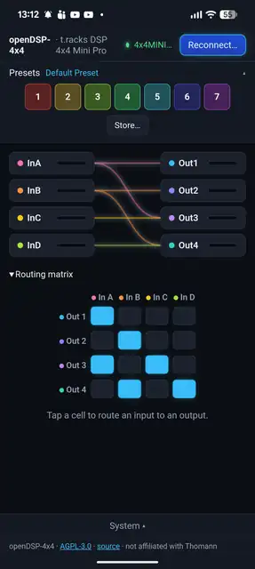

openDSP-4x4
صوت وفيديو وموسيقى
openDSP-4x4 is an open-source control app for the t.racks DSP 4x4 Mini Pro, a 4-in / 4-out XLR digital signal processor that otherwise ships with Windows-only editor software. It lets you set the DSP up from an Android phone or tablet — at the desk or on stage — connected over USB-OTG. The control p
✓ ترخيص مفتوح (AGPL-3.0-or-later) · آخر تحديث: 2026-06-24
0.2.2الإصدار
1.6 MBالحجم
AGPL-3.0-or-laterالرخصة
Open in Kanzتحميل APK (1.6 MB)
Download APK
SHA-256: 7a6b5f09519db1551fa6257001dcca5b87afc54d06347e0d01ad4b66987084f7

امسح الكود لفتح صفحة التطبيق
Scan to open this app page
لو كنز مش متثبت عندك: نزّل متجر كنز.
Not installed? Get the Kanz store.